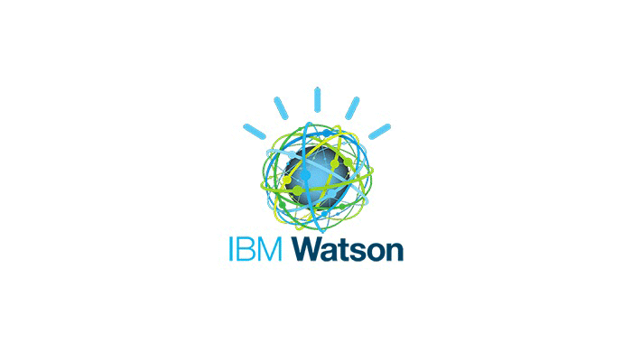

About IBM Watson-like systems

Hi Mimi
Yes, but I’m concerned about the usage of private AI-blackbox as IBM Watson, in medicine, healthcare and any analytics and decisions regarding people-privacy/private citizens life.
Generally speaking, there is a huge concern, nowadays maybe underrated, about incoming pervasive presence of artificial intelligence systems in our societies (IBM is along with Google, Amazon and few others big players).
Specifically, the problem I see with IBM Watson is that it is a closed product of a private company. There is nothing bad in a pure commercial product approach, but problems arise if this product become spread in public domains research, public services (universities, hospitals, etc.), when AI platforms/engines are private commercial products. That’s the point.
And secondly, technically speaking, is not clear to me (and some scientists I interviewed) Watson internals algorithms/functioning, because it’s fully closed; I call this AI-blackbox. That closure is bad, in my modest opinion.
I admit, I’m also critic about big-data machine learning data mining and analytics algos, where there is not a clear way to introspect the “why” when the system made a decision regarding single cases that broke statistical approaches...
Nevertheless, I’m a huge fan of Big Blue, that have all the capacity and power to reverse this business model approach and I please ask IBM to open the doors to scientists community, possibly in the open-source direction.
BTW, I already wrote minor notes and trivial criticisms to IBM Conversation here: (sorry in Italian):
Looking forward your feedback on that and of course I’d happy to share thioughts with Watson developers
Respect
giorgio
Originally published on Medium.